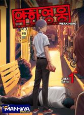
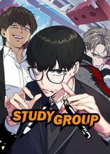

| Viral Hit | Weak Hero | Study Group |
| 1,458,900 | 988,729 | 426,000 |
Scrawny high school student Hobin Yoo is probably the last guy you’d expect to star in a NewTube channel that revolves around fighting.But after following some advice from a mysterious NewTube channel, Hobin is soon knocking our guys stronger than him and raking in more money than he could have ever dreamed of. Can Hobin keep this up, or will he eventually meet his match?
Weak Hero is an action webcomic written by Seopass and drawn by Razen. It's hosted on Naver, with the translated version available on Webtoons here. Eunjang High School is ruled by tyrants: the delinquents at the top of the hierarchy prey on the weak as their favourite form of entertainment. The Union, a collection of vicious fighters, rules the Yeongdeungpo area with an iron fist. The adults are oblivious, and other students turn a blind eye out of fear that they may be next. For those without the strength to protect themselves, high school is a living hell.
Nicknamed the “school for future criminals,” Yusung Technical High School isn’t exactly the ideal place to study. A rarity among his peers, Gamin is a student with just one goal: to get into university. At a school where it’s every man for himself, he is rejected from countless study groups before he decides to form his own. When Hankyeong, Gamin’s former tutor, joins his high school in hopes of earning her teacher certification, it seems like they’re both reaching for the impossible. Can they defeat the odds and achieve their dreams?